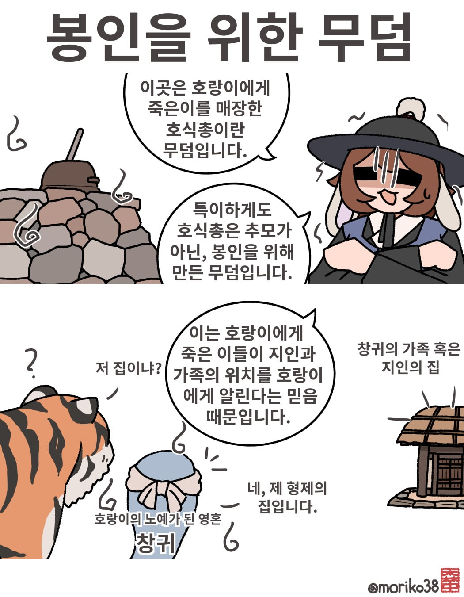
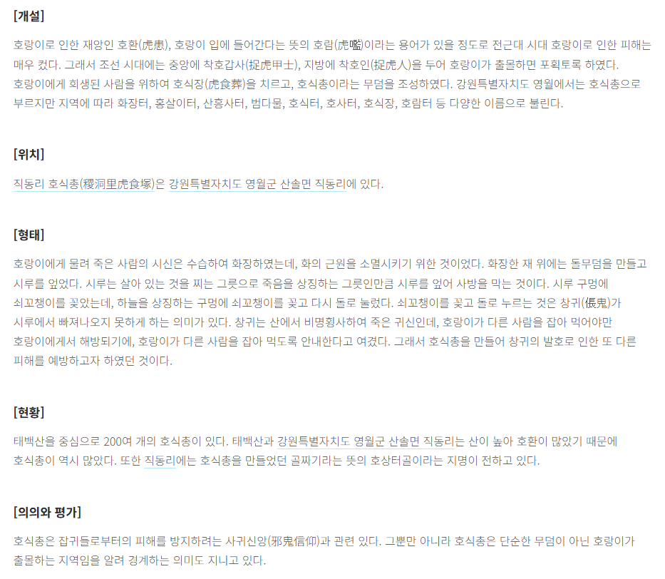
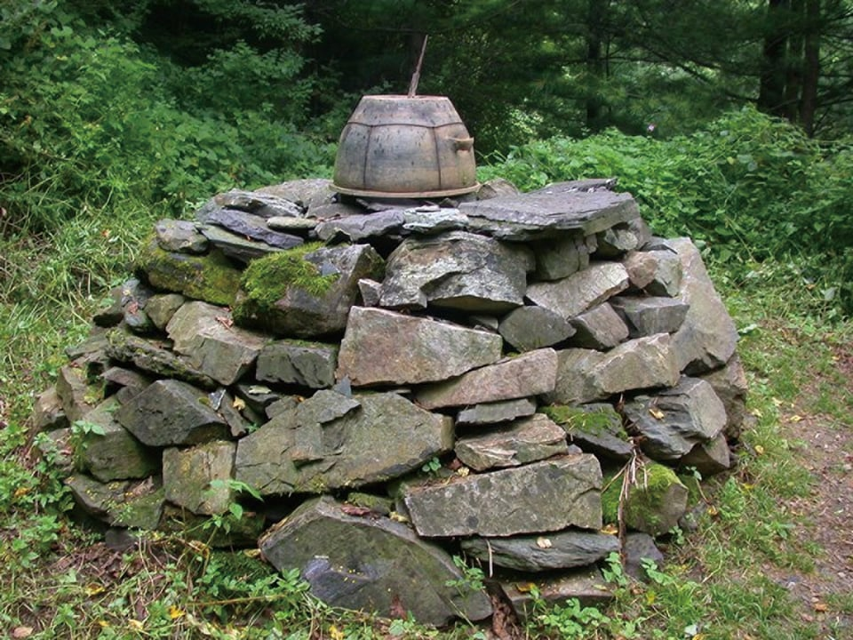

호식총은 호랑이에게 죽은 이들을 위해 만들어진 무덤이다.
하지만 호식총이 만들어지는 이유는 무덤보다는 봉인에 가깝다.
전통적으로 호랑이에게 죽은 이는 창귀가 된다는 믿음이 있는데,
창귀는 자신의 자리를 대신할 이가 잡아먹혀야 해방 될 수 있어 자신의 가족이나 지인에게 호랑이를 안내한다고 한다.
이러한 창귀를 막기 위해, 호랑이에게 죽은 시체가 발견되면, 화장 후 그위에 돌무더기와 시루를 얹은 뒤 쇠꼬챙이를 꽂아 봉인하였다.


호식이 두마리 치킨